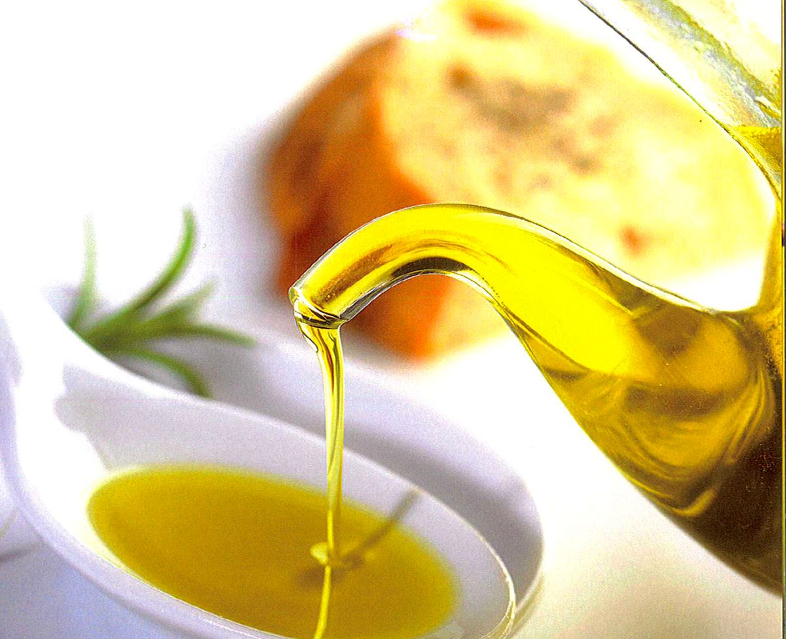
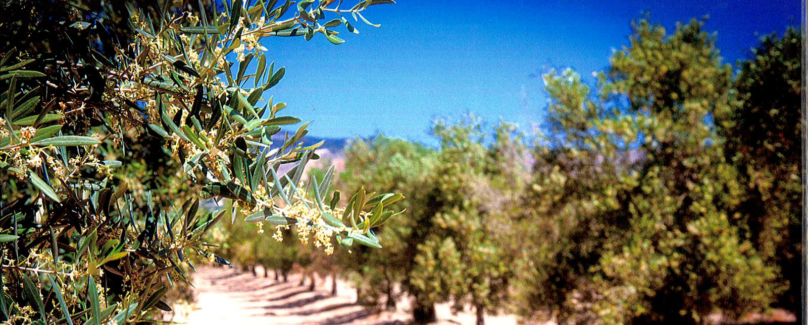

Het landgoed bij Alhama de Murcia, Sierra Espuña op de achtergrond
Het landgoed bij Alhama de Murcia, Sierra Espuña op de achtergrond
Het landgoed
Hacienda San Miguel ligt bij Alhama de Murcia, in de vallei naast natuurpark Sierra Espuña. De familie plantte de eerste bomen in 1995 en bouwde in 1997 een eigen molen op het erf. Sindsdien wordt er geplukt en geperst op dezelfde dag.
Het landgoed bij Alhama de Murcia, Sierra Espuña op de achtergrond
Olijven beginnen meteen na de pluk te oxideren. Elke wachtdag kost geur en smaak. Daarom staat de molen op het erf: plukken in de ochtend, persen in de middag.
De extractie blijft onder de 27°C en de kneedtijd is kort, zodat aroma en polyfenolen in de olie blijven in plaats van in de fabriekshal.
De olie wacht in rvs-tanks in de kelder, beschermd tegen licht en zuurstof, en wordt pas gebotteld op het moment dat er besteld wordt. Niet maanden vooraf.
Pluk in de ochtendkoelte, op het landgoed.
De molen op het erf draait. Koude extractie, korte kneedtijd.
In rvs-tanks, beschermd tegen licht en zuurstof.
Gebotteld op het moment dat jij bestelt. Reserveringen van de persing worden na de oogst gebotteld en binnen een paar weken geleverd.
Open de fles en je ruikt het meteen: tomatenblad, groene appel, vers gemaaid gras. De smaak begint zacht en zoet en eindigt met een peperige afdronk die kriebelt in je keel. Dat prikkelen komt door de polyfenolen, en daar zit alleen verse, vroeg geoogste olie vol mee.
Giet hem over brood, tomaten of een gebakken ei. En omdat Picual van nature zo stabiel is, kun je er net zo goed gewoon in bakken.

Zuurgraad. De EU-grens voor extra vergine is 0,8%; hoe lager, hoe verser de olijf bij de pers.
Tussen pluk en persing. Geoogst in de ochtend, dezelfde dag koud geperst in de eigen molen.
Koude extractie met korte kneedtijd, zodat aroma en polyfenolen niet verloren gaan.
Hacienda San Miguel, Alhama de Murcia. Gecertificeerde geïntegreerde teelt, eigen laboratorium.
Elke batch wordt geanalyseerd in het eigen laboratorium van het landgoed en valt onder het kwaliteitskeurmerk van de regio Murcia. Bij elke bestelling krijg je de oogst- en persdatum van jouw batch.

De boomgaard in bloei, aan de rand van natuurpark Sierra EspuñaEerlijk over deze foto's: ze komen uit de gedrukte brochure van het landgoed en zijn gescand, vandaar de korrel. Bij ons volgende bezoek aan Murcia maken we nieuwe. Tot die tijd vonden we echte foto's van het echte landgoed belangrijker dan gelikte stockbeelden van andermans bomen.